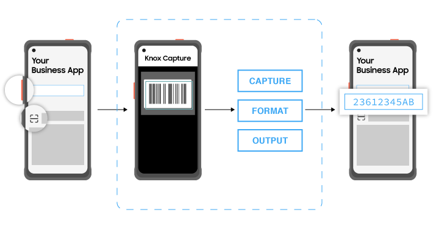

Overview
Last updated July 26th, 2023
Get started with the basics by learning what Knox Capture is and how it works.
What is Knox Capture?
To help explain what Knox Capture does, it may be helpful to start with an understanding of what a wedge scanner is, and how it relates to the Knox Capture solution.
In traditional hardware-based barcode scanning terminology, a wedge scanner is a physical device that attaches between a keyboard and a computer. The keyboard attaches to the scanner, and the scanner attaches to the computer. From the computer’s perspective, the scanner behaves just like an additional keyboard.
When the computer runs a software program (like an inventory spreadsheet app), and barcodes are read using the wedge scanner, data is sent from the scanner to the program in the form of keystrokes. From the program’s point of view, data appears exactly as if someone had typed it manually using a keyboard.
How Knox Capture works
In a similar way, Knox Capture also acts as a wedge between a software program and keyboard. However, instead of being a physical scanning device, Knox Capture is a mobile solution built for compatible Android smartphones and tablets. Enterprise IT admins can either download the Knox Capture app from Google Play, or custom-build their own wedge scanner apps using the Knox Capture SDK (Software Development Kit).
Once Knox Capture is installed and running on a device, it wedges between an application (for example, a business app used to track inventory) and the mobile device’s on-screen keyboard. When an end-user launches their business app, they can simply tap an on-screen button or press a hardware button on their device to trigger a barcode scan using the device’s camera.
After the camera focuses on a barcode, Knox Capture translates the barcode data into keystrokes, which then get passed back to the business app for processing. From the business app’s point of view, keystrokes coming from Knox Capture appear exactly as if a user had typed them from the device keyboard.

Who can use Knox Capture?
Knox Capture is designed for anyone who wants to turn their mobile device into a powerful barcode scanner. However, depending on whether it’s being used by an admin or an end-user, its features vary significantly.
Admin mode (Default)
When Knox Capture is downloaded from Google Play and installed on a compatible Android device — and a valid license key is activated — the app operates in its default Admin mode.
This mode allows the device user — typically an enterprise IT admin — to utilize the full functionality of the app to primarily do the following:
- Create scanning profiles that define which apps can launch the barcode scanner, which barcode types can be scanned (QR, Code 128, EAN8, etc.), and how scanned data is formatted (append Tab or Enter key, insert special characters before or after data, etc.).
- Test scanning profiles to ensure that appropriate business apps can launch the scanner and receive data back as keystrokes.
- Export profile settings as a configuration file, which can then be used by EMM/UEM administrators to deploy Knox Capture as a managed app to end-user devices.
Managed mode
After an IT admin uses their EMM/UEM to deploy Knox Capture as a managed app to an end-user’s device, the device launches the app in Managed mode.
In Managed mode, Knox Capture functionality is greatly reduced. End-users can review their scanning profile settings and perform barcode scans using their business apps (as permitted by their scanning profile), however they can’t make changes to their scanning profiles, export profile settings, or switch to Admin mode by activating a Knox Capture license.
Note
Admin mode is the default mode of operation for Knox Capture. The procedures described in this guide are targeted at an IT admin audience.
Further reading
Getting started tutorials
These tutorials provide a guided workflow for new admins and end-users. While they don’t cover every setting or scenario when using Knox Capture, they do provide a good starting point for learning the app’s basics.
- IT admins: Get started with Knox Capture — Learn how to create a new scanning profile, configure scan engine settings, perform a test scan, and export scanning configurations for deployment through an EMM/UEM as an IT admin.
- End-users: Get started with Knox Capture — Learn how to review scanning profile settings, configure hardware key settings, and perform barcode scans from a business app as a device end-user.
How-to topics
For in-depth explanations and detailed walkthroughs of key Knox Capture features, refer to the following how-to topics for more information:
- Manage licenses — Learn about the Knox Capture licensing procedure, and how to switch between Knox Capture and Knox Capture: Scandit Edition licenses on the app.
- Scanning profiles — Learn how profiles work, what the default profile does, and how to create new profiles for different scanning scenarios.
- Apps and activities — The component of every scanning profile that defines which busiess apps can launch the camera scanner. Learn how apps and activities work, and how you can customize them in the scanning profiles.
- Scan engine settings — These settings define how barcodes are scanned, and what happens with the data after each scan. Learn how to set barcode types, change scan modes, control viewfinder size, and more.
- Keystroke output — The scanning profile setting that defines how data is formatted after each successful scan. Learn how to append or prepend special characters to scanned data, or how to insert ASCII Tabs and Enter keys at the end of each barcode to allow for easier processing in spreadsheets and forms.
- Test mode — A feature that lets you test a scanning profile’s apps, barcode types, and keystroke ouput rules before exporting the configuration for deployment.
- Deploy configuration to EMM/UEM — Learn about the various scanning profile export options, and how to use the exported configuration file in an EMM/UEM to deploy Knox Capture to end-users.
- Set camera scan trigger — A feature that allows IT admins to specify whether a user can trigger a camera scan using a hardware button on the device, an on-screen floating action button, or both. Learn about the different button options, and how to configure the triggers from both the admin and end-user’s point of view.
- Connect a hardware scanner — Certain enterprises may wish to use their existing hardware wedge scanners alongside Knox Capture. Learn how to connect Bluetooth and USB scanners to a device running Knox Capture, and how to perform a test scan once a scanner is connected.
- Configure the output path — Some organizations may want to send scanned Knox Capture data to a bluetooth keyboard connected to a PC, emulating the functionality of a traditional hardware scanner. Learn how output paths work, and how to pair and unpair your device to a bluetooth keyboard.
- Knox Capture AR — A feature introduced in Knox Capture v1.7 that provides important product information inside the camera preview window during a barcode scan. Learn what AR (Augmented Reality) is in Knox Capture, how to create AR templates, and how to use AR when performing barcode scans.
Is this page helpful?